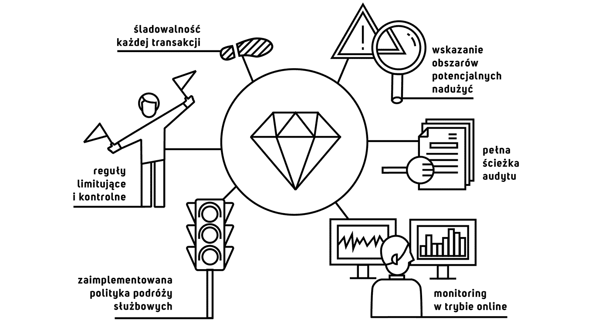

Podróże służbowe i wydatki pracownicze to najmniej przejrzysty proces w organizacjach, co jest wynikiem jego rozległości i różnorodności potrzeb organizacji. Tym samym niezwykle trudne i kosztowne byłoby objęcie procesu wykorzystywanym ERP. Dodatkowo, do niedawna nie było możliwości jego automatyzacji. To właśnie w tym obszarze pojawia się 25% wszystkich nadużyć pracowników. Nie wliczając sytuacji, kiedy pracownicy podejmują złe decyzje, a na reagowanie jest już za późno. Rozumiejąc potrzeby firm, podczas budowy naszego rozwiązania nie zapomnieliśmy o zapewnieniu:
